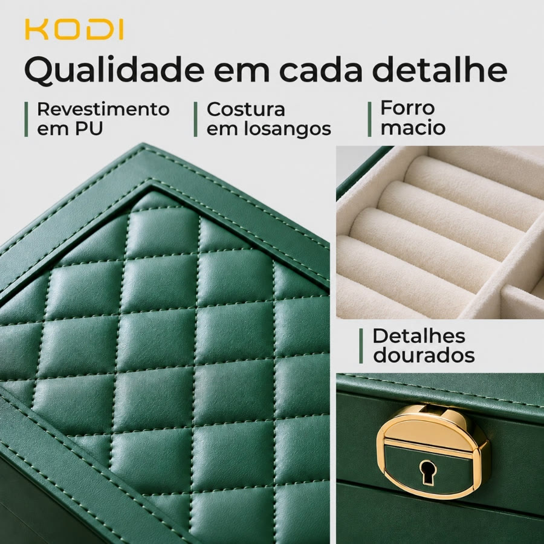

Achado nº 161
Porta-joias de três andares.
Porta-joias de 3 andares com 2 gavetas, em couro sintético
★ 4,9 · mais de 37 mil avaliações na Shopee

O que diz a página oficial do produto
- Porta-joias em couro sintético (PU) com costura em losangos, fecho dourado e alça em cima
- São 3 níveis: a bandeja de cima e duas gavetas
- Tem 8 ganchos para colar na tampa, placa de brincos removível, rolinhos para anéis, divisórias removíveis e apoio para relógio
- Segundo o anúncio, o forro de dentro é macio, aveludado
- Vem em verde, preto, branco, rosa, azul e vermelho, conforme o modelo
- Na Shopee, tem nota 4,9 com mais de 37 mil avaliações e mais de 80 mil vendidos
Link de afiliado: se você comprar por ele, a Achadaria pode receber uma comissão, sem custo extra para você. Preço, estoque e entrega são da loja e podem mudar; confira lá antes de comprar.